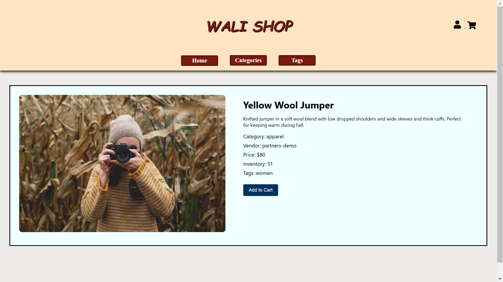
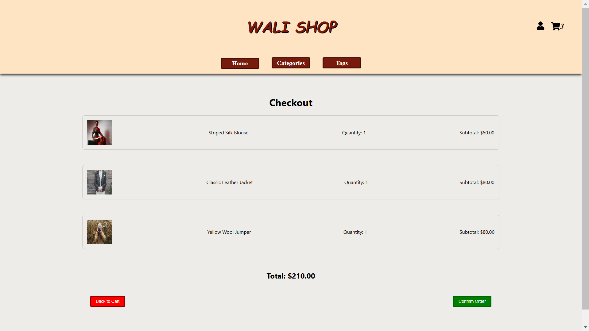

Wali Shop - An Online Shopping Platform
WaliShop is a simple yet comprehensive React-based online shopping platform developed as part of the COMP3120 course at Macquarie University. The project was built to provide users with an intuitive online shopping experience, featuring functionalities such as product listings, user profile management, cart operations, and order history. The platform leverages React for the frontend, utilizing React Router for seamless navigation and Axios for handling API calls, while the backend is implemented with Express.js to manage data and provide essential API endpoints. The application is accessible at WaliShop.
The platform includes several key features designed to offer a complete online shopping experience:
- Product Listing and Details: Users can browse through a variety of products, view detailed information, and filter products by category or tags. Each product page provides relevant details including title, description, vendor, and price.
- User Profiles: Users can create and manage their profiles, ensuring personalized experiences across the platform.
- Cart Management: The cart functionality allows users to add products, adjust quantities, and remove items, with dynamic price calculations to keep track of the total cost.
- Checkout and Order History: Users can proceed to checkout from their cart and confirm their orders. The order history feature provides users with a record of past transactions, allowing them to easily track their purchases.
- Responsive Design: The frontend design of WaliShop is fully responsive, ensuring a smooth and visually appealing experience on both desktop and mobile devices.
During development, several tools and technologies were employed to enhance the application's functionality. Axios was used for efficient API calls, while React Hooks were implemented to manage component state and side effects. The backend utilized Express.js, with CORS enabled to allow cross-origin requests, and data was managed through a local JSON file to simulate a database for product and user information. The server provides various API endpoints for products, users, categories, tags, and orders, ensuring the application remains dynamic and user-friendly.
This project demonstrates skills in both frontend and backend development, with a focus on building a user-centered shopping platform that meets the requirements of a modern e-commerce application. Due to academic integrity policies of Macquarie University, the repository containing the code and supporting documents is private, but it can be shared with potential recruiters upon request from here.